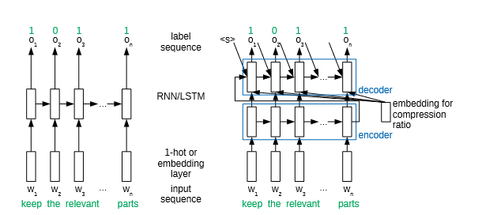

Automatic Compression of Subtitles with Neural Networks and its Effect on User Experience

INTERSPEECH (2019) Poster
Authors
Katrin Angerbauer, Heike Adel, Ngoc Thang Vu
Materials
Abstract
Understanding spoken language can be impeded through factors like noisy environments, hearing impairments or lack of proficiency. Subtitles can help in those cases. However, for fast speech or limited screen size, it might be advantageous to compress the subtitles to their most relevant content. Therefore, we address automatic sentence compression in this paper. We propose a neural network model based on an encoder-decoder approach with the possibility of integrating the desired compression ratio. Using this model, we conduct a user study to investigate the effects of compressed subtitles on user experience. Our results show that compressed subtitles can suffice for comprehension but may pose additional cognitive load.